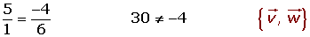
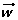
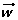

Base
Base

Dos vectores  y
y  con distinta dirección forman una base, porque cualquier vector del plano se puede poner como combinación lineal de ellos.
con distinta dirección forman una base, porque cualquier vector del plano se puede poner como combinación lineal de ellos.

Las coordenadas del vector respecto a la base son:

Los dos vectores que forman una base no pueden ser paralelos.
Ejemplos: Qué pares de los siguientes vectores forman una base:



Clasificación de bases
1 Base ortogonal
Los dos vectores de la base son perpendiculares entre sí.
2 Base ortonormal
Los dos vectores de la base son perpendiculares entre sí, y además tienen módulo 1.
Los dos vectores de la base son perpendiculares entre sí, y además tienen módulo 1.
Esta base formada por los vectores y  se denomina base canónica.
se denomina base canónica.
Es la base que se utiliza habitualmente, de modo que si no se advierte nada se supone que se está trabajando en esa base.
1 Qué pares de los siguientes vectores forman una base:


2 Sean los vectores libres  = (2, 1),
= (2, 1),  = (1, 4) y  = (5, 6). Determinar:
= (1, 4) y  = (5, 6). Determinar:
1 Si forman una base  y .
y .
2 Expresar como combinación lineal de los de la base


3 Calcular las coordenadas de C respecto a la base.
Las coordenadas de respecto a la base son: (2, 1)
Un vector tiene de coordenadas (3, 5) en la base canónica. ¿Qué coordenadas tendrá referido a la base  = (1, 2),
= (1, 2),  = (2, 1)?
= (2, 1)?
(3, 5) = a (1, 2) + b (2, 1)
3 = a + 2b a = 3 - 2b a = 7/3
5 = 2a + b 5 = 2 (3 - 2b) + b b = 1/3
Las coordenadas de en la base B son (7/3, 1/3).